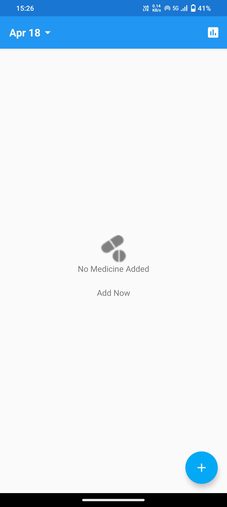
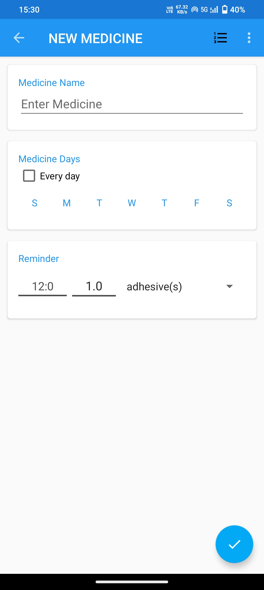
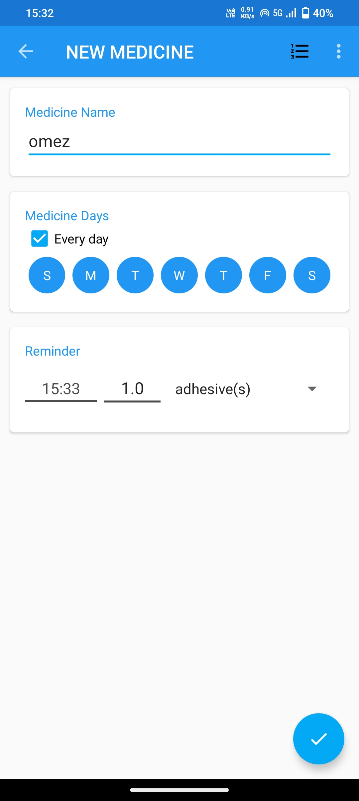
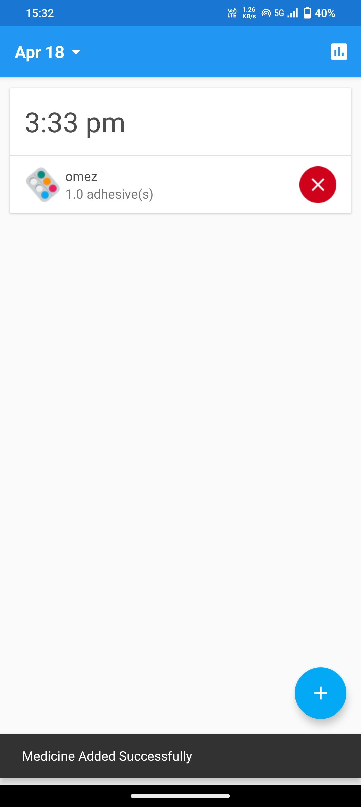
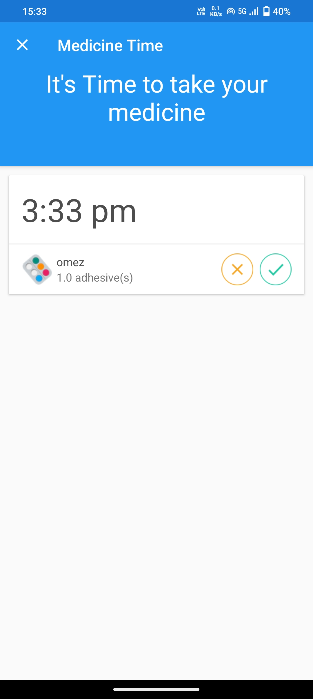
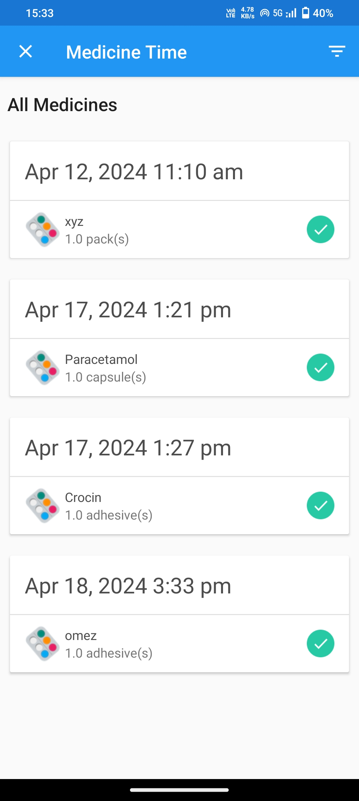

Step 1: open the app and click on the + sign

Step 2: Enter the name of the medicine, days you want to consume medicine and the time

Step 3: once you filled all the information, click on the ✓ sign

Step 4: now your timer is being set. You can cancel the alarm from here by clicking cross sign

Step 5: the alarm will right at the set time. If you took the medicine click on tick button else click on cross button

Step 6: all the history of your medicine intake (taken, ignored) is recorded here.